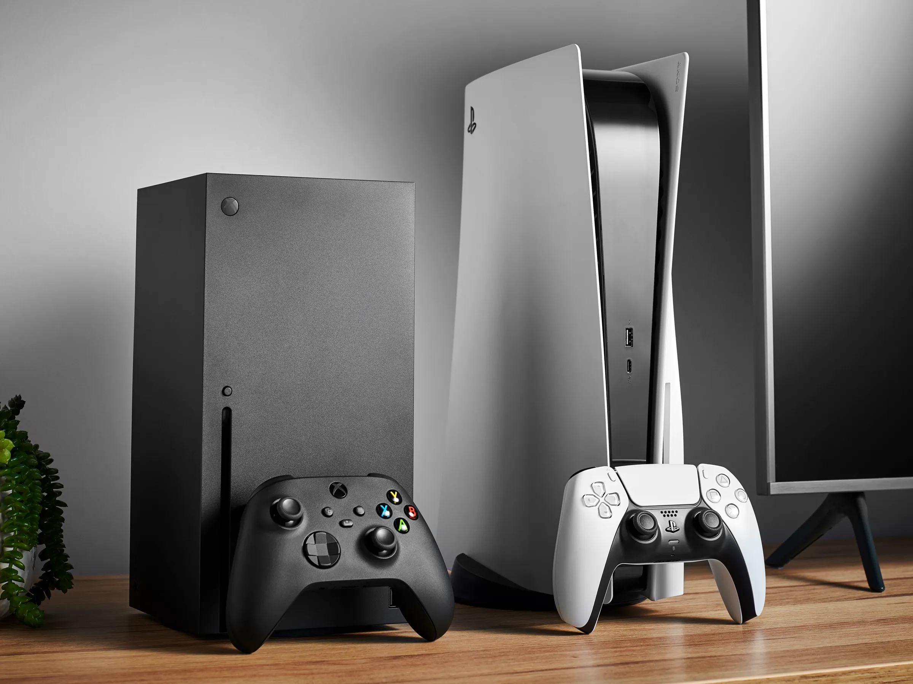

The old Generation

In 1951, Ralph Baer conceived the idea of an interactive television while building a television set from scratch for Loral in the Bronx, New York. Baer did not pursue the idea, but it returned to him in August 1966 when he was the Chief Engineer and manager of the Equipment Design Division at Sanders Associates. By December 1966, he and a technician created a prototype that allowed a player to move a line across the screen. After a demonstration to the company's director of research and development, some funding was allotted and the project was made official. Baer spent the next few months designing further prototypes, and in February 1967 assigned technician Bill Harrison to begin building the project.Harrison spent the next few months in between other projects building out successive modifications to the prototype. Baer, meanwhile, collaborated with engineer Bill Rusch on the design of the console, including developing the basis of many games for the system.
click hear for more information
The New Generation
With the 9th generation of consoles looming on the horizon, many companies have started to offer next generation upgrades between the 8th gen (Xbox One and PlayStation 4) and 9th gen (Xbox Series X and PlayStation 5). The idea of next gen upgrades is currently being spear-headed by the Smart Delivery program from the Xbox Series X, in which supported games will get a free upgrade from the One version to the Series X version of the game. The Smart Delivery program is made to ensure that gamers never have to buy the same game twice. The Smart Delivery program was praised by gamers and critics alike, and soon many companies have put their games on the Smart Delivery program, and even started offering their own next gen upgrades for free on the PS5. However, as with every pro-consumer move in the industry, there are a few greedy companies that have decided to lock next-gen upgrades behind a pricewall and a standardized prices (as $70), thanks to an atrocious idea coined by Take-Two CEO Strauss Zelnick.
click hear for more information